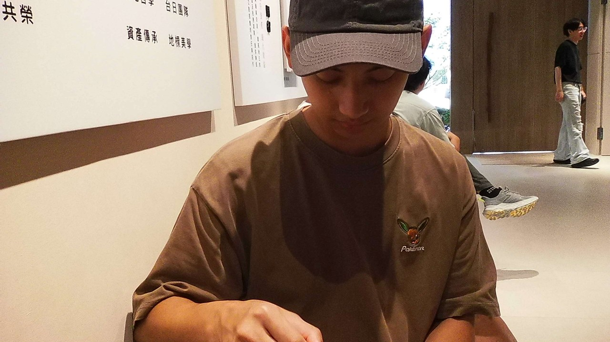

具備軟硬體整合與網頁前端開發經驗的資訊背景工程師。
熟悉 C 語言與 Arduino 微控制器開發，能精準掌握基礎電路邏輯與感測器應用；同時具備 HTML5 / CSS3 現代前端技術與響應式網頁（RWD）介面實作能力。
熱愛探索新技術，專注於解決實際工程問題與打造流暢的跨平台互動體驗。
專攻嵌入式系統設計、微控制器應用與 Web 前端開發技術，注重理論與實體動手做的整合實踐。
目前就讀於臺北城市科技大學資訊工程系。求學期間不僅扎根於程式邏輯與演算法，更對「從微控制器驅動實體硬體」到「以網頁建構使用者互動介面」的垂直整合抱持強烈熱忱。習慣在遇到未知的技術問題時，主動查閱官方規格書與文件，動手排除各項 Bug。
在嵌入式開發方面，熟悉以 C 語言進行 Arduino 控制與 UART/I2C 通訊協定，具備獨立整合多種感測器模組的實作經驗；在 Web 領域，堅持從手寫原生語意化 HTML5 與 CSS3 架構做起，重視現代網頁的 RWD 響應式佈局與俐落的使用者介面美學。
我具備積極、條理分明與熱愛實作的特質。面對快速演進的科技領域，能持續吸收軟硬體新知並迅速轉化為解決方案。未來期許自己能將嵌入式底層思維與現代前端技術相結合，在團隊中發揮高度彈性與跨領域協作價值。